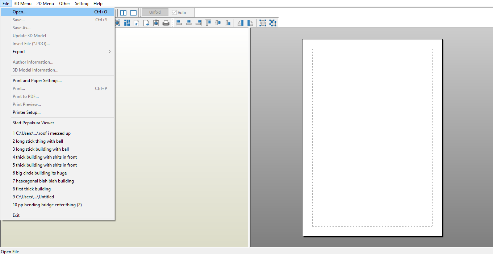
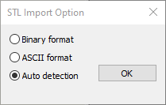
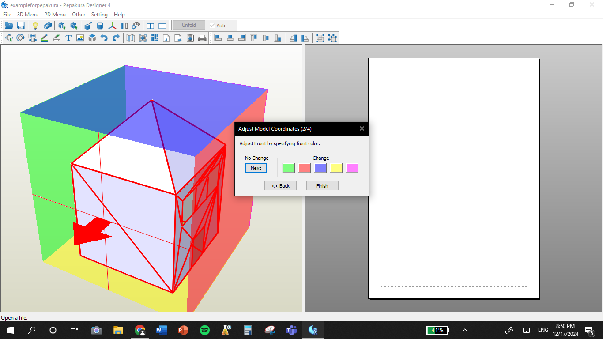
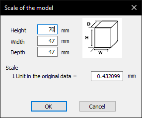
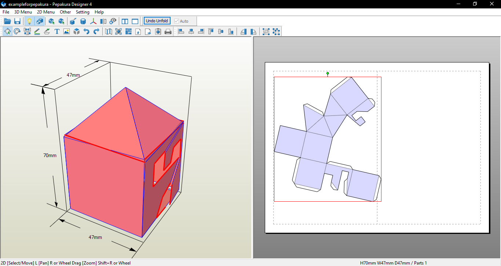

UNFOLD IN PEPAKURA
Unfolding your 3D model in Pepakura Designer is one of the most important steps in creating your papercraft template. Follow these instructions to get started:
- Open Your File
- Go to File > Open in Pepakura Designer and select your exported model file. 
- Unfold Your Model
- Click the Unfold button to start the process.
- Follow the Prompts
- When prompted, select Auto Detection in the first pop-up. 
- On the next pop-up, press No Flip.
- Set Orientation
- Determine which face of your shape is the bottom by adjusting the orientation. Click on the colors to test it and choose the correct side. 
- When asked if you want to invert the model, select No Invert.
- Set the Real-Life Scale
- Input your desired model height in millimeters. The other dimensions will adjust automatically. For example, I set mine to 70 mm. 
- Adjust the Unfolded Template
- Make sure all parts fit within the page boundaries. You can move pieces around if needed to ensure they stay within the lines. 


And there you have it! Your unfolded template is ready for the next step!